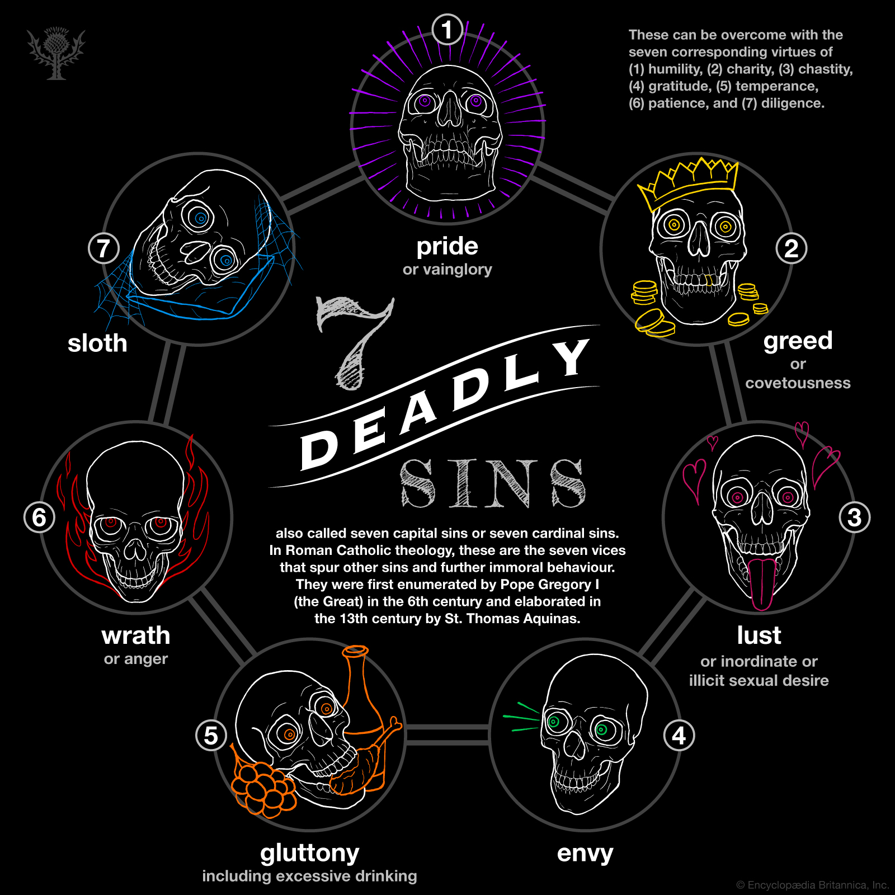

Seven Deadly Sins
This website is about The Seven Deadly Sins which becomes fatal to spiritual progress.
Here you can learn their history and cultural associations with Heavenly Virtues.

An infographic depicting the seven deadly sins of Roman Catholicism.
Source: Encyclopedia Britannica, Inc./Patrick O'Neill Riley
Watch this video and get an understanding about the 7DS:
If you want to get rid of those sins that you have done in you life, then there is still a path open for you: